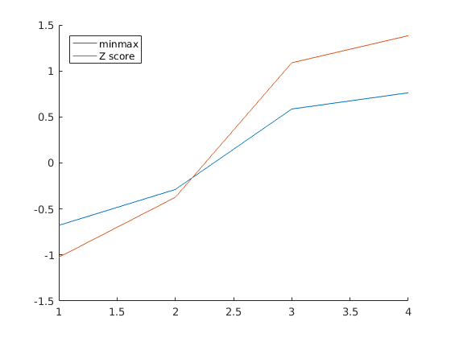

Contents
function P2_GroupGamma
CS4821 Project2 GroupGamma
Prithvi Kambhampati
Sree Ram Akula
Question 1: minmaxnorm and zscorenorm
function [trData_minmaxnorm, teData_minmaxnorm] = minmaxNorm(trData,teData,minV,maxV)
if ((nargin==1) & (nargout==1)) for i = 1:size(trData,2) trData_minmaxnorm(:,i) = (trData(:,i)-min(trData(:,i)))/(max(trData(:,i))-min(trData(:,i))); end end if ((nargin==2) & (nargout==2)) for i = 1:size(trData,2) trData_minmaxnorm(:,i) = (trData(:,i)-min(trData(:,i)))/(max(trData(:,i))-min(trData(:,i))); end for i = 1:size(teData,2) teData_minmaxnorm(:,i) = (teData(:,i)-min(trData(:,i)))/(max(trData(:,i))-min(trData(:,i))); end end if ((nargin==3) & (nargout==1)) for i = 1:size(trData,2) trData_minmaxnorm(:,i) = ((trData(:,i)-min(trData(:,i)))/(max(trData(:,i))-min(trData(:,i))))*(minV-teData)+teData; end end if ((nargin==4) & (nargout==2)) for i = 1:size(trData,2) trData_minmaxnorm(:,i) = ((trData(:,i)-min(trData(:,i)))/(max(trData(:,i))-min(trData(:,i))))*(maxV-minV)+minV; end for i = i:size(teData,2) teData_minmaxnorm(:,i) = ((teData(:,i)-min(trData(:,i)))/(max(trData(:,i))-min(trData(:,i))))*(maxV-minV)+minV; end end
end function [trData_zscorenorm,teData_zscorenorm] = zscoreNorm(trData,teData,madFlag)
if ((nargin==2) & (nargout==1)) if teData>0 for i = 1:size(trData,2) trData_zscorenorm(:,i) = (trData(:,i)-mean(trData(:,i)))/mad(trData(:,i)); end else for i = 1:size(trData,2) trData_zscorenorm(:,i) = (trData(:,i)-mean(trData(:,i)))/std(trData(:,i)); end end end if ((nargin==3) & (nargout==2)) if madFlag>0 for i = 1:size(trData,2) trData_zscorenorm(:,i) = (trData(:,i)-mean(trData(:,i)))/mad(trData(:,i)); end for i = 1:size(teData,2) teData_zscorenorm(:,i) = (teData(:,i)-mean(trData(:,i)))/mad(trData(:,i)); end else for i = 1:size(trData,2) trData_zscorenorm(:,i) = (trData(:,i)-mean(trData(:,i)))/std(trData(:,i)); end for i = 1:size(teData,2) teData_zscorenorm(:,i) = (teData(:,i)-mean(trData(:,i)))/std(trData(:,i)); end end end
end
Question 2 : Normalize Data
a. min-max Normalization in range 0-1
clear; Data_Q2 = [200;300;400;600;1000]; MinMax_Norm_Data_Q2 = minmaxNorm(Data_Q2);
b. z-score Normalization
Zscore_Norm_Data_Q2 = zscoreNorm(Data_Q2,0);
c. z-score Normalization using mean absolute deviation
Mad_Zscore_Norm_Data_Q2 = zscoreNorm(Data_Q2,1);
Sno={'1','2','3','4','5'};
Table=table(Data_Q2,MinMax_Norm_Data_Q2,Zscore_Norm_Data_Q2,Mad_Zscore_Norm_Data_Q2,...
'RowNames',Sno)
Table =
Data_Q2 MinMax_Norm_Data_Q2 Zscore_Norm_Data_Q2 Mad_Zscore_Norm_Data_Q2
_______ ___________________ ___________________ _______________________
1 200 0 -0.94868 -1.25
2 300 0.125 -0.63246 -0.83333
3 400 0.25 -0.31623 -0.41667
4 600 0.5 0.31623 0.41667
5 1000 1 1.5811 2.0833
Question 3 : Iris Data
iris_data = fileread('iris.data'); iris_data = textscan(iris_data,'%f%f%f%f%s','delimiter',','); petal_length = cell2mat(iris_data(1,3));
a. min-max Normalization in range -1 - 1
Data_Q3 = [1.95;3.1;5.68;6.2];
disp(Data_Q3)
[MinMax_Norm_petal_length,MinMax_Norm_Data_Q3] = minmaxNorm(petal_length,Data_Q3,-1,1);
fprintf('mix max normaliaztion of 1.95, 3.1, 5.68, 6.2 is:\n')
disp(MinMax_Norm_Data_Q3)
1.9500
3.1000
5.6800
6.2000
mix max normaliaztion of 1.95, 3.1, 5.68, 6.2 is:
-0.6780
-0.2881
0.5864
0.7627
b. z-score Normalization
[Zscore_Norm_petal_length,Zscore_Norm_Data_Q3] = zscoreNorm(petal_length,Data_Q3,0);
fprintf('Z-score Normaliaztion of 1.95, 3.1, 5.68, 6.2 is:\n')
disp(Zscore_Norm_Data_Q3)
Z-score Normaliaztion of 1.95, 3.1, 5.68, 6.2 is:
-1.0251
-0.3733
1.0889
1.3836
c. Comment on which method is preferred for this data, and why?
figure hold on plot(MinMax_Norm_Data_Q3) plot(Zscore_Norm_Data_Q3) legend('minmax','Z score','location','northwest') hold off
We think that Z-score normalization is better in this case as the data does not have a huge range to normalize it between a particular range. Z-score preserves the range and introduces the dispersion of the series (standard deviation and mean).
Question 4 : Distance Data
a. Manhattan, Euclidean, Minkowski, Supremum, Cosine Distances
- Manhattan Distance
Data_Q4 = [1.4,1.3,2.9;1.8,1.4,3.2;1.3,1.2,2.9;0.9,3.5,3.1;1.5,2.1,3.3]; x = [1.25,1.78,3.01]; for i=1:size(Data_Q4,1) Manhattan_Distance(i,1) = (abs(x(1)-Data_Q4(i,1))) + (abs(x(2)-Data_Q4(i,2))) + (abs(x(3)-Data_Q4(i,3))); end
- Euclidean Distance
for i=1:size(Data_Q4,1) Euclidean_Distance(i,1) = sqrt(((x(1)-Data_Q4(i,1))^2)+((x(2)-Data_Q4(i,2))^2)+((x(3)-Data_Q4(i,3))^2)); end
- Minkowski Distance
for i=1:size(Data_Q4,1) Minkowski_Distance(i,1) = ((abs(x(1)-Data_Q4(i,1))^3)+(abs(x(2)-Data_Q4(i,2))^3)+(abs(x(3)-Data_Q4(i,3))^3))^(1/3); end
- Supremum Distance
for i=1:size(Data_Q4,1) a(1)=(abs(x(1)-Data_Q4(i,1))); a(2)=(abs(x(2)-Data_Q4(i,2))); a(3)=(abs(x(3)-Data_Q4(i,3))); Supremum_Distance(i,1) = max(a); end
- Cosine Similarity
X = Data_Q4; Y = x; Cosine_Similarity = (X*Y')./(sqrt(sum(X'.^2))'*sqrt(sum(Y'.^2))); Table_Q4 = table(Manhattan_Distance,Euclidean_Distance,Minkowski_Distance,Supremum_Distance,Cosine_Similarity,... 'RowNames',Sno); disp(Table_Q4)
Manhattan_Distance Euclidean_Distance Minkowski_Distance Supremum_Distance Cosine_Similarity
__________________ __________________ __________________ _________________ _________________
1 0.74 0.51478 0.48671 0.48 0.99198
2 1.12 0.69498 0.61101 0.55 0.98505
3 0.74 0.59245 0.58144 0.58 0.99006
4 2.16 1.7576 1.7249 1.72 0.94369
5 0.86 0.499 0.41752 0.32 0.99927
b. min-max Normalization in range 0 - 1 and Euclidean Distance
- min-max Normalization in range 0 - 1
[MinMax_Norm_Data_Q4,MinMax_Norm_x] = minmaxNorm(Data_Q4,x);
- Euclidean Distance
for i=1:size(Data_Q4,1) Euclidean_Distance_Norm_Data_Q4(i,1) = sqrt(((MinMax_Norm_x(1)-MinMax_Norm_Data_Q4(i,1))^2)+((MinMax_Norm_x(2)-MinMax_Norm_Data_Q4(i,2))^2)+((MinMax_Norm_x(3)-MinMax_Norm_Data_Q4(i,3))^2)); end fprintf('Eucledian distance beteen x and x1 ... x5 is: \n') disp(Euclidean_Distance_Norm_Data_Q4)
Eucledian distance beteen x and x1 ... x5 is:
0.3833
0.7914
0.3772
0.8724
0.7888
end